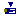
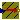
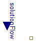
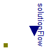

Physiolibrary.Osmotic.Sources.SolventOutflux
Physiolibrary.Osmotic.Sources.SolventOutflux
Extends from Modelica.Icons.SourcesPackage (Icon for packages containing sources).
| Name | Description |
|---|---|
| SolventInflux | Prescribed solvent inflow |
|  SolventOutflux | Prescribed solvent outflow |
|  UnlimitedSolution | Prescribed osmolarity |
Prescribed solvent inflow

Extends from Chemical.Interfaces.ConditionalSolutionFlow (Input of solution volumetric flow vs. parametric solution volumetric flow).
| Type | Name | Default | Description |
|---|---|---|---|
| VolumeFlowRate | SolutionFlow | 0 | Volumetric flow of solution if useSolutionFlowInput=false [m3/s] |
| External inputs/outputs | |||
| Boolean | useSolutionFlowInput | false | =true, if solution flow input is used instead of parameter SolutionFlow |
| Type | Name | Description |
|---|---|---|
| input VolumeFlowRateInput | solutionFlow | [m3/s] |
| OsmoticPort_b | q_out |
2009-2010
Marek Matejak, Charles University, Prague, Czech Republic
Physiolibrary.Osmotic.Sources.SolventOutflux
Prescribed solvent outflow

Extends from Chemical.Interfaces.ConditionalSolutionFlow (Input of solution volumetric flow vs. parametric solution volumetric flow).
| Type | Name | Default | Description |
|---|---|---|---|
| VolumeFlowRate | SolutionFlow | 0 | Volumetric flow of solution if useSolutionFlowInput=false [m3/s] |
| External inputs/outputs | |||
| Boolean | useSolutionFlowInput | false | =true, if solution flow input is used instead of parameter SolutionFlow |
| Type | Name | Description |
|---|---|---|
| input VolumeFlowRateInput | solutionFlow | [m3/s] |
| OsmoticPort_a | q_in |
2009-2010
Marek Matejak, Charles University, Prague, Czech Republic
Prescribed osmolarity
This model defines a fixed temperature T at its port in Kelvin, i.e., it defines a fixed temperature as a boundary condition.
| Type | Name | Default | Description |
|---|---|---|---|
| Osmolarity | Osm | 0 | Fixed osmolarity at port if useOsmolarityInput=false [mol/m3] |
| External inputs/outputs | |||
| Boolean | useOsmolarityInput | false | =true, if fixed osmolarity at port is from input instead of parameter |
| Equilibrium | |||
| Simulation | |||
| Boolean | isIsolatedInSteadyState | true | =true, if there is no flow at port in steady state |
| SimulationType | Simulation | Types.SimulationType.NormalI... | If in equilibrium, then zero-flow equation is added. |
| Type | Name | Description |
|---|---|---|
| OsmoticPort_b | port | |
| input TemperatureInput | osmolarity | [K] |